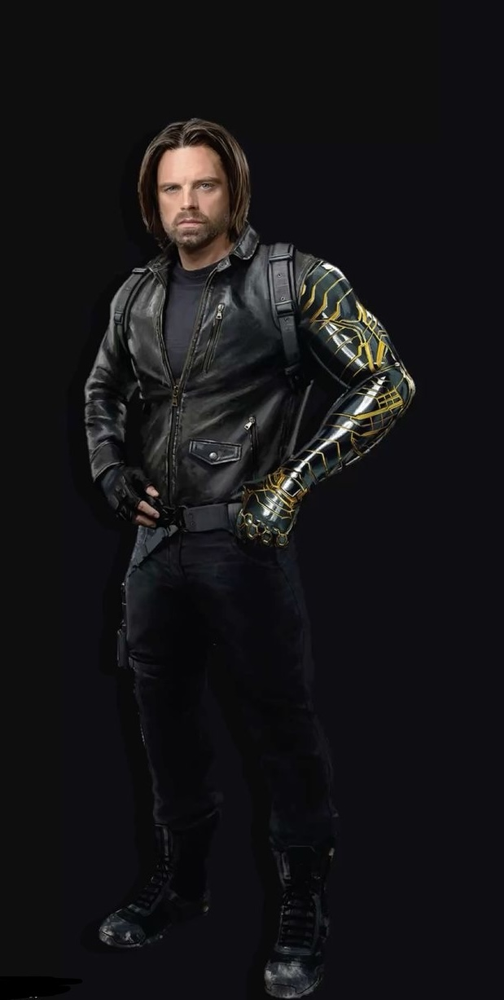

Full Name : James Buchanan "Bucky" Barnes
Date of Birth : March 10th, 1917
Species : Human
Alias : Bucky Barnes (codenames : Winter Soldier, White Wolf)
Status : Alive
Backstory : Former WWII veteran who served in the 107th infantry regiment, alongside his childhood bestfriend Steve rogers. Barnes enlisted into the army following the attack on Pearl Harbor and was assigned assigned to the 107th in 1943. His unit was captured by Hyrdra, where Barnes was injected with the super soldier serum by Arnim Zola. Barnes was rescued by Rogers, who had become Captain America, to which they would form the Howling Commanders to battle Red Skull's forces. However an attempt was made to capture Zola in Austrian Alphs, yet Barnes was caught in an ambush and plummeted hundreds of feet. Although his body was recovered, Barnes was presummed decorated and honored as a hero who died in service to his country. Unbeknownst to everyone Barnes enhanced abilities allowed him to survive the fall, yet he was captured by Hydra and spent the next 70+ years being brainwashed and be armed with a new cybernetic arm in order to become their operative, known as the Winter Soldier.
First appearence : appeared in Captain America : The First Avenger
Current Status : Although Barnes entered into politics and began a campaign to get elected into the United States Congress in 2027, he managed to somehow get himself involved with a group of outcasts halfway through his term as a congressman. After figuring out the truth about Bob, him and the other thunderbolt members decided to confront Valentina Allegra de Fontaine at the watchtower. Yet somehow those plans went haywire after being defeated by the genetically modified Sentry (Bob), to which soon after New York was attacked by the Void. Barnes and the rest of the thunderbolts worked together to stop the threat by letting themselves be engulfed by the Void to aid Yelena in convincing Bob to fight the void. They eventually succeded and returned to make an attempt in exposing Valentina, yet somehow Barnes and the rest of the thunderbolts were tricked into being announced as the New Avengers.